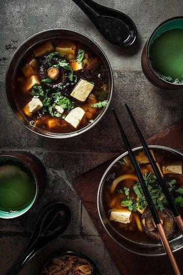
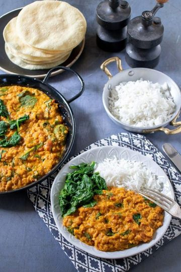
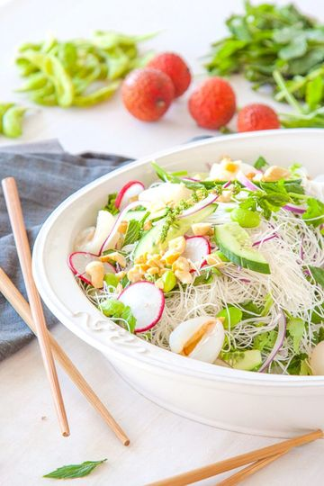
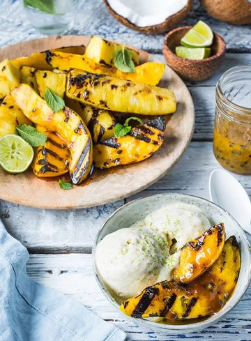
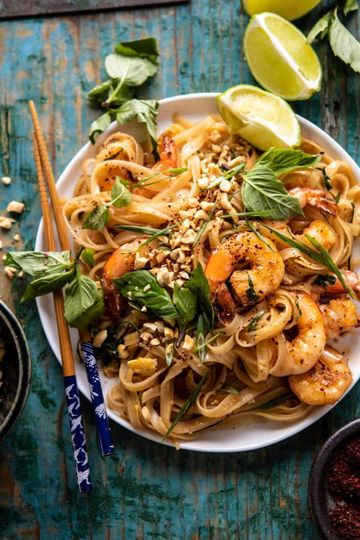
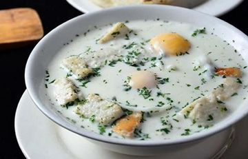
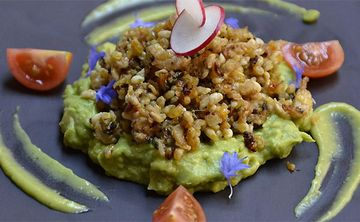

Sopa de miso
Preparada con pasta de miso de soja fermentada, caldo dashi, tofu y cebollín. Ligera, reconfortante y llena de sabor.
Recetas exóticas de India, Asia y Latinoamérica. Abre el menú para descubrirlas.
Comidas exóticas
Platos y comidas artesanales
Av. Maravilloso del Paraíso 246
Raki_Daulat@gmail.com
WhatsApp: +1 829-684-6325
Instagram y Facebook: @Raki_Daulat

Otro favorito de la India: lentejas cocinadas lentamente con especias y verduras salteadas. Sencillo y muy saludable.

Fresca y frutal, perfecta para los días calurosos de verano cuando se busca algo liviano.

Piña, durazno y mango frescos, asados a la parrilla hasta caramelizar. Un postre con todo el sabor del verano.

Fideos de arroz salteados con brotes de soja, cebollín, cilantro, maní y azúcar morena. Disponible con tofu o camarones.

Plato típico del altiplano colombiano: caldo de leche con huevo pochado, cebolla y cilantro. Ideal para el desayuno.

Conocidos como el caviar mexicano, son larvas de hormiga muy apreciadas en Hidalgo, Puebla y Tlaxcala.
Pregunta por los platos del día y las opciones vegetarianas. Precios y disponibilidad sujetos a temporada.